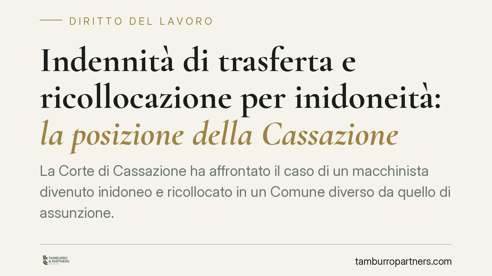

Indennità di trasferta e ricollocazione per inidoneità: la posizione della Cassazione
La Corte di Cassazione ha affrontato il caso di un macchinista divenuto inidoneo e ricollocato in un Comune diverso da quello di assunzione. Secondo la Corte, se lo spostamento risponde comunque a esigenze organizzative dell'impresa, l'indennità di trasferta resta dovuta e le somme già versate non sono ripetibili. Un principio che incide sulla gestione delle inidoneità sopravvenute.

Il caso: macchinista inidoneo e spostamento di sede
Un lavoratore del settore ferroviario, divenuto non più idoneo alle mansioni di macchinista per ragioni di salute, era stato adibito a compiti compatibili presso una sede collocata in un Comune diverso da quello della sede di assunzione.
Il datore aveva corrisposto l'indennità di trasferta per il periodo di operatività presso la nuova sede, salvo poi chiederne la restituzione sostenendo che lo spostamento fosse riconducibile a un'esigenza del lavoratore (la sua salute) e non dell'impresa.
La Corte di Cassazione ha respinto questa impostazione. La ricollocazione del dipendente inidoneo, anche quando trae origine da una condizione personale, resta una scelta organizzativa del datore di lavoro, che decide come e dove impiegare la residua capacità lavorativa. Ne consegue che lo spostamento conserva natura di trasferta e l'indennità è dovuta. Le somme già versate non possono essere richieste indietro.
> Gli estremi esatti della pronuncia (sezione, numero e anno) vanno verificati sulla banca dati ufficiale prima di ogni utilizzo tecnico. [riferimento da verificare]
Indennità di trasferta: inquadramento normativo
Occorre distinguere due istituti spesso confusi.
Il trasferimento è il mutamento definitivo del luogo di lavoro ed è disciplinato dall'art. 2103, ultimo comma, c.c.: il datore può disporlo solo in presenza di comprovate ragioni tecniche, organizzative e produttive. Non comporta indennità di trasferta, ma la stabile modifica della sede.
La trasferta è invece lo svolgimento temporaneo della prestazione in luogo diverso dalla sede abituale, con mantenimento del vincolo con quest'ultima. A fronte della trasferta spetta un'indennità, la cui misura e disciplina sono rimesse alla contrattazione collettiva. Nel settore in esame la fonte è la clausola del CCNL Mobilità–Attività ferroviarie dedicata all'indennità di trasferta (la numerazione dell'articolo va riscontrata sulla versione vigente del contratto).
Sul fronte della ricollocazione del lavoratore inidoneo, il fondamento non sta tanto nella L. 68/1999 – che riguarda il collocamento mirato dei disabili iscritti alle categorie protette – quanto nell'art. 42 del D.Lgs. 81/2008, che impone al datore di adibire il lavoratore divenuto inidoneo a mansioni equivalenti o, in mancanza, inferiori, ove compatibili. Il perimetro delle mansioni resta quello tracciato dall'art. 2103 c.c.
Implicazioni pratiche per le imprese
La pronuncia sposta l'attenzione su un punto spesso trascurato: la causale dello spostamento. Se la collocazione in altra sede serve a far fronte all'inidoneità sopravvenuta impiegando comunque il lavoratore nell'organizzazione aziendale, l'interesse soddisfatto è dell'impresa. Da qui la natura di trasferta e il relativo trattamento.
Rilevano poi i profili economici. L'indennità di trasferta gode di un regime fiscale e contributivo agevolato nei limiti fissati dall'art. 51, comma 5, TUIR, che distingue il trattamento a seconda che la trasferta si svolga fuori o entro il territorio comunale. La corretta qualificazione dello spostamento incide quindi anche sul piano retributivo e previdenziale.
Per il lavoratore, il principio significa che l'indennità percepita in queste situazioni non è un'erogazione revocabile a discrezione del datore.
Cosa fare in concreto
- Verificate la clausola di CCNL applicabile, individuando con precisione l'articolo che disciplina l'indennità di trasferta e le relative condizioni di spettanza.
- Qualificate correttamente lo spostamento, distinguendo trasferta (temporanea, con mantenimento della sede) da trasferimento (definitivo, ex art. 2103 c.c.), perché da ciò dipende il trattamento economico.
- Documentate la causale della ricollocazione, conservando il giudizio di inidoneità e l'atto di adibizione alle nuove mansioni ai sensi dell'art. 42 D.Lgs. 81/2008.
- Valutate gli aspetti fiscali e contributivi dell'indennità alla luce dell'art. 51, comma 5, TUIR, prima di procedere a erogazioni o a eventuali richieste di restituzione.
- Ricostruite l'interesse sotteso allo spostamento: se prevale l'esigenza organizzativa dell'impresa, la natura di trasferta e il relativo trattamento tendono a confermarsi.
Resta fermo che la soluzione dipende dalla disciplina collettiva applicabile e dalla configurazione concreta dello spostamento: ogni fattispecie va esaminata nei suoi elementi specifici.
---
Contributo informativo a cura di Tamburro & Partners - Avv. Giuseppe Tamburro. Non costituisce parere legale.
Ogni storia di lavoro ha i suoi tempi.
Se gestisci HR e vuoi un confronto su contenzioso, ispezioni o licenziamenti, scrivi allo studio. Ti rispondiamo entro un giorno lavorativo.